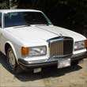
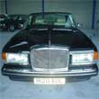

| ABOUT BISH |
| THE CARS |
| OFFERS |
| BLOG |
| CONTACT |
| WELCOME to Bish Motors |
This is a site dedicated to a private car collection which will hopefully grow over the next few years. Presently just a hobby, but who knows what may develop. Cars in the collection:
Cars that have been sold recently:
Other vehicles:
|
FEATURED CARS |
||
  |
||
FEATURED WINE |
||
|
This is my favourite red wine it comes from Campo de Borga in the northern part of Spain. The aromas are complex, a blend of spices and ripe fruit. Produced from the Garnacha grape variety, this wine is a blend of selected grapes from vines more than 40 years old. Click the bottle to order a case direct from the bodega. Or contact me for a referral. |
|